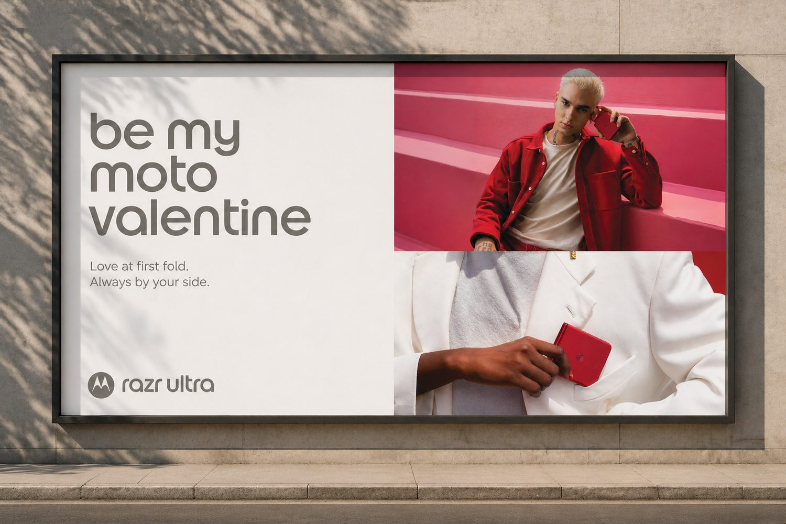
Motorola’s Valentine’s campaign for razr ultra needed to feature specific products and promotions across the website, customer email, and social. The goal was to make the phone feel like part of a meaningful gift, not a spec sheet next to a discount.
I was involved from the concept stage. I pitched one of the campaign’s main visual directions: premium, lifestyle-led Valentine’s imagery that presents the device as something you give to someone. That direction was selected.
From there I translated the concept into assets for each customer touchpoint, working from the priorities Marketing set for which products and offers appeared where.
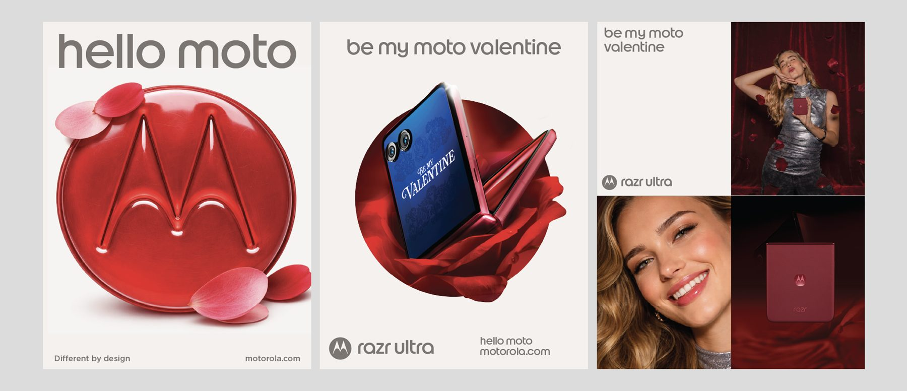
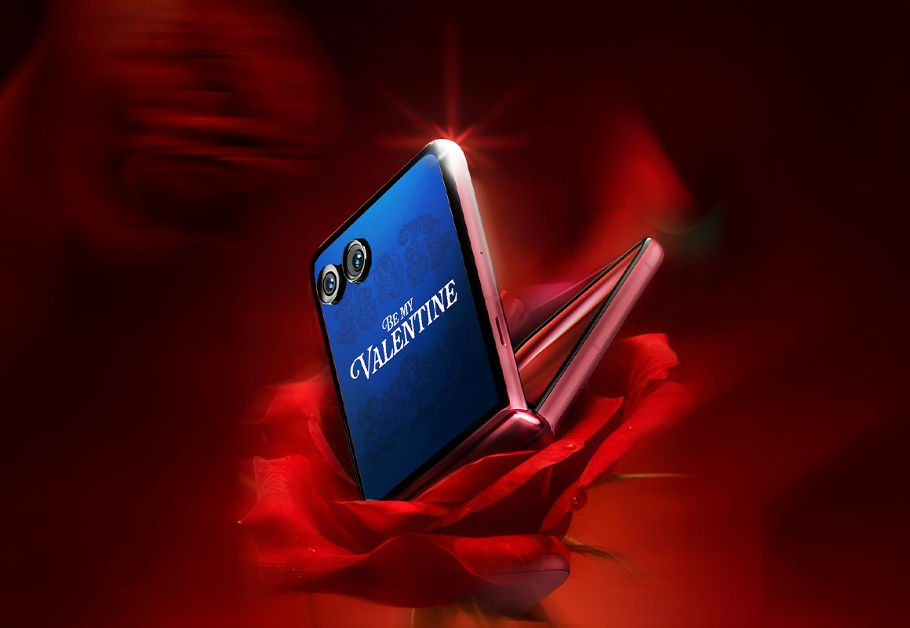
I created 10+ sample 3D renderings of the batwing logo to find a material that fit the campaign. A fur texture didn’t connect with the luxury feel or the phone’s other materials, so I chose a glossy finish that fit the luxury aesthetic.
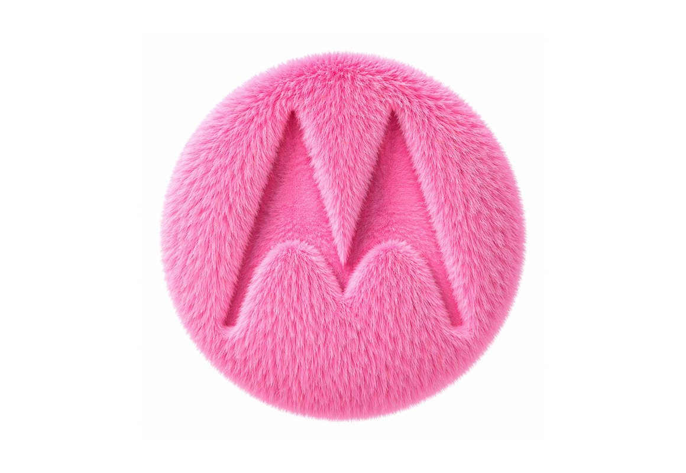
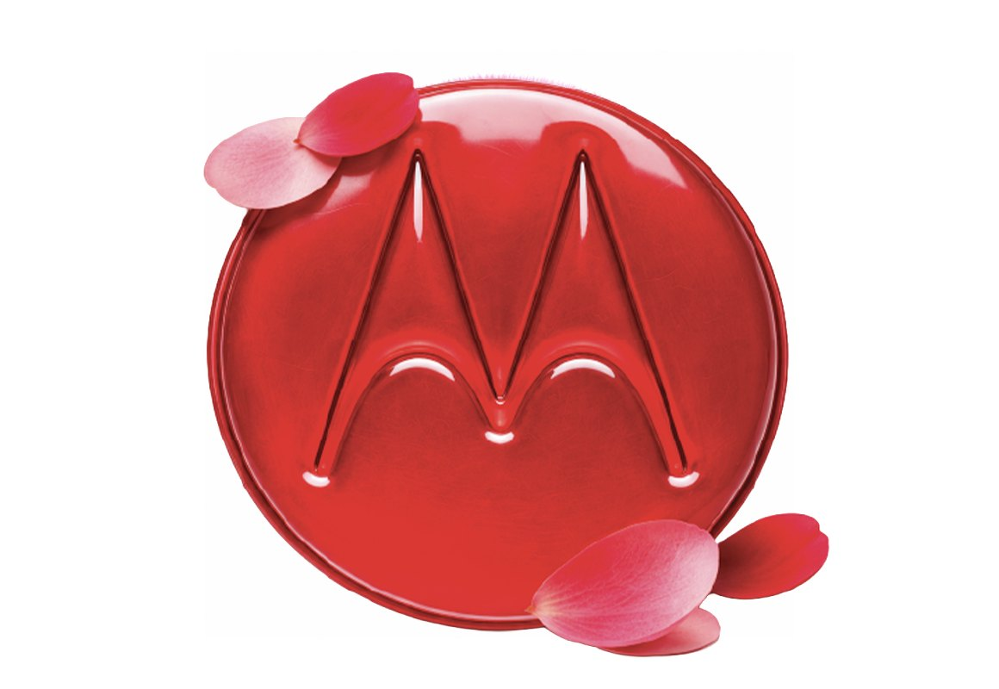
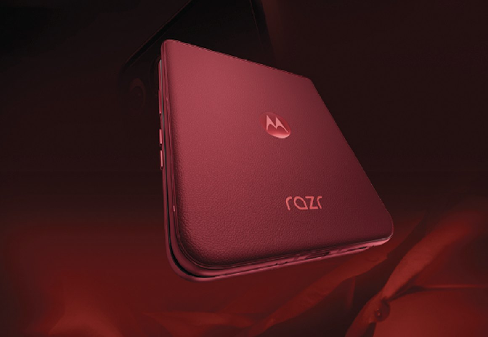
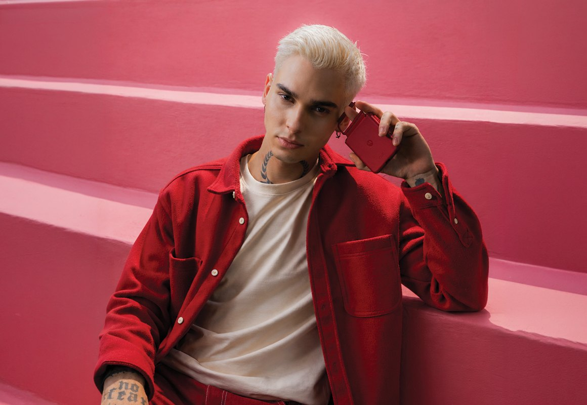
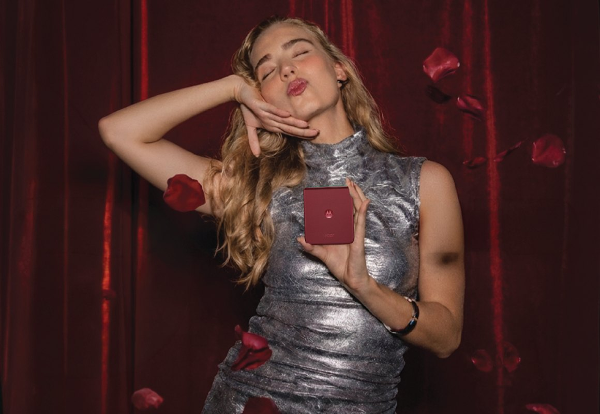
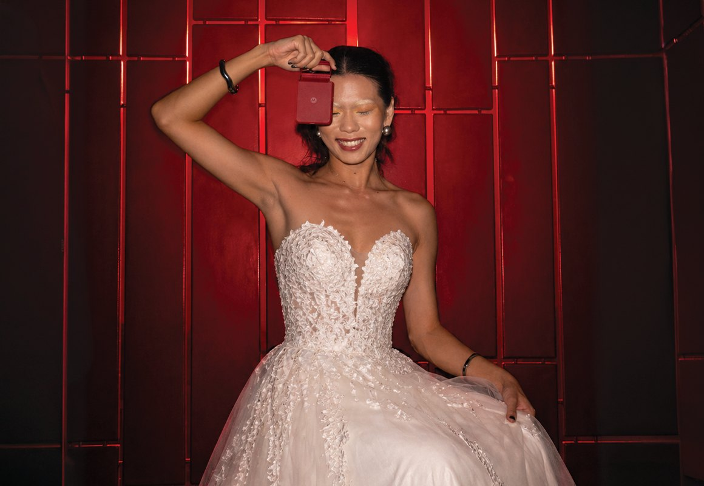
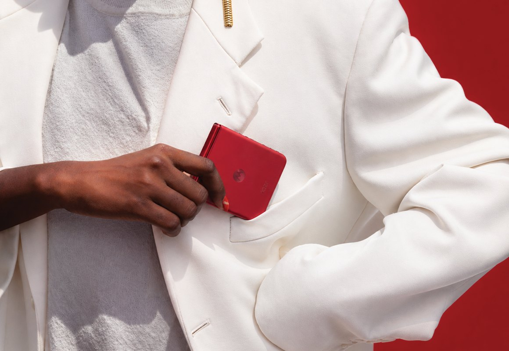
Promotional offers changed several times during production. Early-year business conditions, including tariff considerations, moved product promotions quickly, and every change touched products, pricing messages, and layouts across many versions of the creative, with no extra time on the schedule.
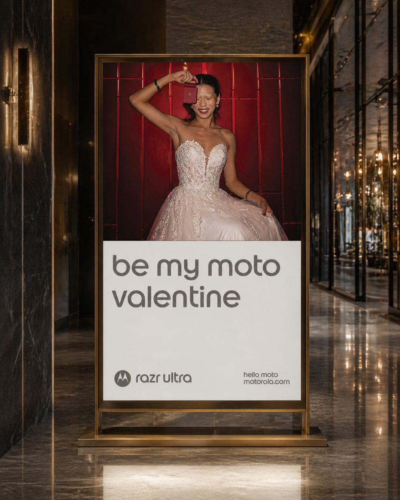
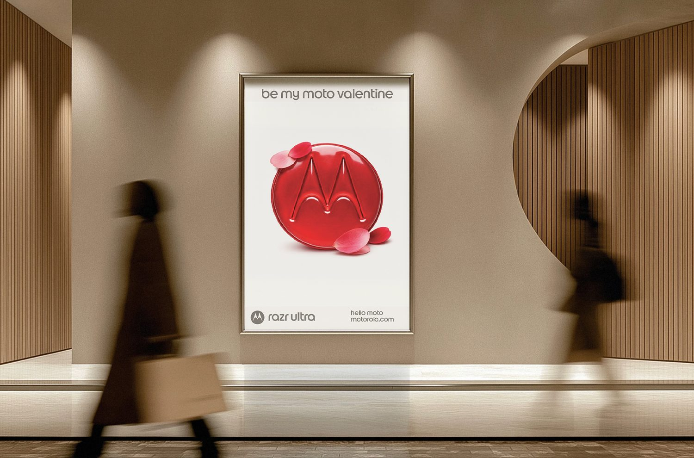
Despite late promotional changes, the assets were delivered in time for the planned rollout across Motorola’s digital channels. Leadership recognized the team for delivering efficiently on a compressed timeline without losing visual consistency.